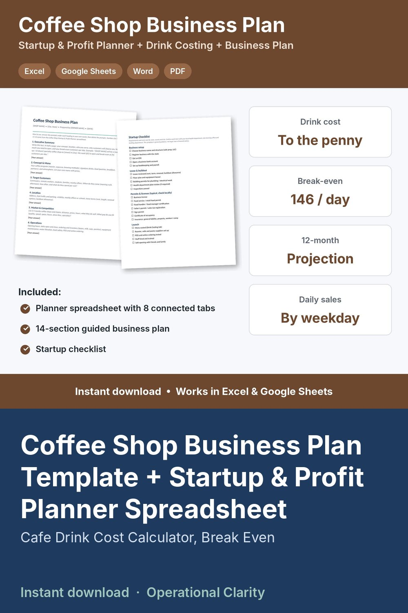

Coffee Shop Business Plan Template + Startup & Profit Planner Spreadsheet

COFFEE SHOP BUSINESS PLAN TEMPLATE + STARTUP & PROFIT PLANNER | Cafe Business Plan (Word) + Drink Cost Calculator, Break-Even & 12-Month Projection Spreadsheet | Excel & Google Sheets | Instant Download
Planning to open a coffee shop or cafe? This kit gives you a guided business plan AND the spreadsheet that does the math behind it: what it costs to open, what every drink costs you, how many customers you need each day, and what your first year could look like.
THE PLANNER (Excel / Google Sheets)
• Startup costs: buildout, espresso machine, grinders, refrigeration, furniture, permits, inventory and working capital, with paid/unpaid status and funding source (savings, loan, investor, equipment financing)
• Drink & menu costing: enter your bean price per lb, grams per shot, milk prices, syrup and cups once. Build every drink by shots, milk ounces and pumps and see its exact cost, cost %, and profit. Items over your target turn red.
• Blended cost of sales using your sales mix, so your projection uses realistic numbers
• Monthly costs: rent, utilities, insurance, loans, software, marketing, plus barista wages and payroll %
• Break-even: sales per month and per day, and the number of CUSTOMERS PER DAY you need
• 12-month projection: days open and customers per day by month, revenue, cost of goods, card fees, labor, fixed costs, net profit, cumulative cash and payback month, with a chart
• Daily sales log: sales, transactions and labor hours each day, with average sales, customers and labor % by weekday so you can staff the right days
• Dashboard: your whole plan on one tab
THE BUSINESS PLAN (Word + PDF)
• 14 guided sections with prompts: executive summary, concept & menu, customers, location, competition, operations, permits, equipment, team, marketing, funding, financials, pricing, risks & timeline
• Startup checklist: business setup, lease & buildout, permits & licenses, insurance, launch
WHAT YOU GET
• Coffee Shop Startup & Profit Planner (.xlsx)
• Coffee Shop Business Plan (Word + PDF)
• Start Here guide (PDF)
Example numbers are included so you can see how it works. Replace them with your own quotes and costs.
GOOD TO KNOW
• Digital download. No physical item will be shipped.
• A planning tool, not legal, tax or financial advice. Permit requirements vary by location.
• For your own use. No reselling or sharing of the files.